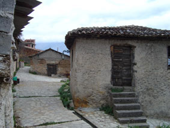

| Τα βυρσοδεψεία στην παραδοσιακή συνοικία Χάρμαινα  Σε πείσμα της βιομηχανικής εξέλιξης τα ταμπάκικα, παραδοσιακές βιοτεχνίες κατεργασίας δερμάτων, επιβιώνουν στην παραδοσιακή συνοικία Χάρμαινα, στην ¶μφισσα. Εκεί τα κτήρια χρονολογούνται από τα χρόνια της τουρκοκρατίας. Τα Ταμπάκικα σφράγισαν την οικονομική ζωή της ¶μφισσας κατά το παρελθόν, ενώ τροφοδότησαν την τοπική φαντασία με θρύλους για στοιχειά που προστατεύουν το νερό, αυτό το βασικό στοιχείο που δίνει εξαιρετική ποιότητα στο δέρμα. Σήμερα αυτής της ποιότητας δέρματα χρησιμοποιούνται για εξειδικευμένες εργασίες, όπως οι καλλιτεχνικές βιβλιοδεσίες. «Σήμερα έχουν απομείνει τρεις ταμπάκηδες», μαρτυρία του ταμπάκη Κώστα Μερινόπουλου Προφορική μαρτυρία Γ. Σκυλογιάννη, Καλλιτεχνικού Διευθυντή Εικαστικού Εργαστηρίου Δήμου ¶μφισσας: «Η γειτονιά των ταμπάκηδων» |
||